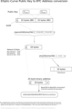

 This article may be too technical for some users. The more basic article on Bitcoin Addresses may be more appropriate.
{kind=link}
A Bitcoin address is a 160-bit hash of the public portion of a public/private ECDSA keypair. Using public-key cryptography, you can "sign" data with your private key and anyone who knows your public key can verify that the signature is valid.
A new keypair is generated for each receiving address (with newer HD wallets, this is done deterministically). The public key and their associated private keys (or the seed needed to generate them) are stored in the wallet data file. This is the only file users should need to ?backup. A "send" transaction to a specific Bitcoin address requires that the corresponding wallet knows the private key implementing it. This has the implication that if you create an address and receive coins to that address, then restore the wallet from an earlier backup, before the address was generated, then the coins received with that address are lost; this is not an issue for HD wallets where all addresses are generated from a single seed. Addresses are added to an address key pool prior to being used for receiving coins. If you lose your wallet entirely, all of your coins are lost and can never be recovered.
Bitcoin allows you to create as many addresses as you want, and use a new one for every transaction. There is no "master address": the "Your Bitcoin address" area in some wallet UIs has no special importance. It's only there for your convenience, and it should change automatically when used.
Bitcoin addresses contain a built-in check code, so it's generally not possible to send Bitcoins to a mistyped address. However, if the address is well-formed but no one owns it (or the owner lost their wallet.dat), any coins sent to that address will be lost forever.
Hash values and the checksum data are converted to an alpha-numeric representation using a custom scheme: the Base58Check encoding scheme. Under Base58Check, addresses can contain all alphanumeric characters except 0, O, I, and l. Normal addresses currently always start with 1 (addresses from script hashes use 3), though this might change in a future version. Testnet addresses usually start with m or n. Mainline addresses can be 25-34 characters in length, and testnet addresses can be 26-34 characters in length. Most addresses are 33 or 34 characters long.
Collisions (lack thereof)
Since Bitcoin addresses are basically random numbers, it is possible, although extremely unlikely, for two people to independently generate the same address. This is called a collision). If this happens, then both the original owner of the address and the colliding owner could spend money sent to that address. It would not be possible for the colliding person to spend the original owner's entire wallet (or vice versa). If you were to intentionally try to make a collision, it would currently take 2107 times longer to generate a colliding Bitcoin address than to generate a block. As long as the signing and hashing algorithms remain cryptographically strong, it will likely always be more profitable to collect generations and transaction fees than to try to create collisions.
It is more likely that the Earth is destroyed in the next 5 seconds, than that a collision occur in the next millenium.
How to create Bitcoin Address
- Having a private ECDSA key 18E14A7B6A307F426A94F8114701E7C8E774E7F9A47E2C2035DB29A206321725
- Take the corresponding public key generated with it (65 bytes, 1 byte 0x04, 32 bytes corresponding to X coordinate, 32 bytes corresponding to Y coordinate) 0450863AD64A87AE8A2FE83C1AF1A8403CB53F53E486D8511DAD8A04887E5B23522CD470243453A299FA9E77237716103ABC11A1DF38855ED6F2EE187E9C582BA6
- Perform SHA-256 hashing on the public key 600FFE422B4E00731A59557A5CCA46CC183944191006324A447BDB2D98D4B408
- Perform RIPEMD-160 hashing on the result of SHA-256 010966776006953D5567439E5E39F86A0D273BEE
- Add version byte in front of RIPEMD-160 hash (0x00 for Main Network)
00010966776006953D5567439E5E39F86A0D273BEE
(note that below steps are the Base58Check encoding, which has multiple library options available implementing it)
- Perform SHA-256 hash on the extended RIPEMD-160 result 445C7A8007A93D8733188288BB320A8FE2DEBD2AE1B47F0F50BC10BAE845C094
- Perform SHA-256 hash on the result of the previous SHA-256 hash D61967F63C7DD183914A4AE452C9F6AD5D462CE3D277798075B107615C1A8A30
- Take the first 4 bytes of the second SHA-256 hash. This is the address checksum D61967F6
- Add the 4 checksum bytes from stage 7 at the end of extended RIPEMD-160 hash from stage 4. This is the 25-byte binary Bitcoin Address. 00010966776006953D5567439E5E39F86A0D273BEED61967F6
- Convert the result from a byte string into a base58 string using Base58Check encoding. This is the most commonly used Bitcoin Address format 16UwLL9Risc3QfPqBUvKofHmBQ7wMtjvM